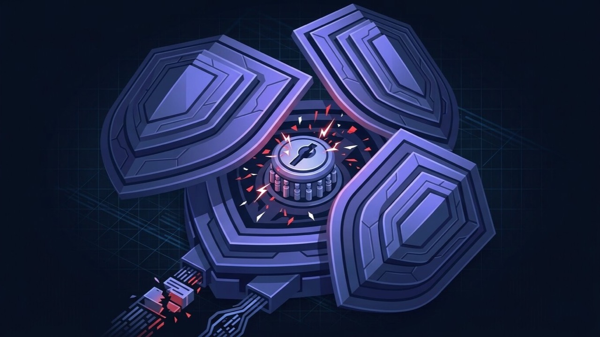

Never been hacked, want to keep it that way
Close the obvious gaps before they get tested, rather than finding out about them the way most sites do.
A standalone hardening pass for a WordPress site that hasn’t been hacked — login, firewall, file permissions and backups checked and corrected once, with a written report. Not a clean-up, and not a subscription.
THE PROBLEM
Almost every WordPress compromise traces back to the same short list of causes. None of them require an attacker to do anything clever — just to find the one that was left open.
WHO THIS IS FOR
This is proactive, one-time hardening — not the clean-up that follows an active hack, and not an ongoing monitoring plan. If the site is currently hacked or flagged, start with WordPress Malware Removal or Google Blacklist Removal instead; if you want it watched continuously afterward, that’s WordPress Maintenance.
Close the obvious gaps before they get tested, rather than finding out about them the way most sites do.
The hardening included in a clean-up covers the essentials quickly. This is the more thorough, independent pass afterward.
A new developer, client or contractor is about to get access. Worth having a documented, current baseline before that happens.
A host, agency or plugin flagged something vague. This gets you a straight, specific answer on what that actually means and what to do about it.
SCOPE

PROCESS
Current passwords, admin accounts, plugins, file permissions and headers checked against a fixed standard, so you know exactly what’s open before anything changes.
A full snapshot is taken before anything is touched, so there’s a fallback point regardless of what happens next.
Rate limiting, brute-force protection and two-factor authentication configured where the site supports it.
Rules matched to the site’s actual traffic and hosting environment, not left on a plugin’s generic defaults.
Core, wp-content and uploads checked and corrected to a sane baseline, closing the gaps that let an attacker write new files.
A scheduled backup that’s never been tested is not a safety net. This confirms it actually is one.
A written record of what was hardened and why — a fixed, one-time pass, with nothing ongoing to maintain unless you want it.
BENEFITS
Eleven years of freelance WordPress work has meant cleaning up more hacked sites than anyone would want to, which is exactly why this exists as its own service — closing the causes before they turn into a clean-up job.
The realistic, well-documented list of causes behind most WordPress compromises, addressed directly, before an attacker finds them.
A fixed, one-time pass with a written report at the end — not a subscription you have to remember to cancel.
Useful for you, a future developer, or anyone else who touches the site later and needs to know what’s already been done.
RELEVANT WORK
Each of these is written up as a full case study — the problem, the approach, the stack and the outcome.
German motorhome dealership running sales, rental and workshop booking side by side, with dealer ranges for Dethleffs, Pössl, Sunlight and Knaus.
Branding, web design and marketing studio running a subscription creative service, with a work showcase and a direct booking flow.
Nursery and pre-school group with multiple settings — admissions, visit booking, Ofsted information and recruitment.
Advertising agency covering branding and packaging, content creation, media production and 3D rendered commercials.
TESTIMONIALS
Every completed Upwork contract to date, each rated 5.0 — quoted as written.
“He is very punctual on timelines and has a complete inside out knowledge of WordPress theme development.”
“He completed the customer theme development work before time. The work delivered is awesome and he delivered more than expected. Really a good and honest freelancer to work with.”
“Ashekur Rahman delivers the work timely and perfectly. His knowledge in wordpress is very vast and he can do anything in wordpress and web developement.”
FAQ
What people ask before booking a hardening pass, mostly about how this differs from the other security services.
Malware Removal is what runs after an actual hack — cleaning the infection and closing the specific entry point that let it in, and it already includes a baseline hardening step as part of that clean-up. This service is proactive and standalone: a deeper hardening pass done once, whether or not the site has ever been compromised. If your site is currently hacked or flagged, start with Malware Removal instead.
This is a one-time hardening pass that ends with a written report — no ongoing commitment. WordPress Maintenance is the opposite: a monthly arrangement that keeps updates, backups and monitoring running continuously. Some clients get hardening done once here, then move to a maintenance plan afterward if they want it watched going forward; neither requires the other.
That's the most common reason clients book this. Most WordPress compromises trace back to the same short list of causes — weak login protection, an unpatched plugin, loose file permissions, no firewall — and this closes all of them at once, before any of them get tested.
Yes. A clean-up's hardening step is usually the essentials done quickly so the site can go back live. This is a deeper, independent pass — useful on the same site for extra assurance, or on a different site you'd rather protect before it ever has an incident.
No one can honestly promise that. What this does is close the realistic, well-documented list of causes behind most WordPress compromises, which removes the vast majority of the actual risk — it just can't reduce it to zero.
Most sites are audited and hardened within a few days. You get a fixed scope and timeline after a short look at the current setup — hosting environment and plugin count are the main factors that change it.
Most of my clients are outside Bangladesh — the UK, Germany and the US primarily. I am based in Bangladesh and work across European and North American time zones without difficulty, with a same-day reply to anything urgent.
Available for new projects
NEXT STEP
Based in Bangladesh, working with clients worldwide. Whether the site’s never had an incident or you just want a deeper pass after one — every serious enquiry gets a reply within one working day.
ALSO WORTH READING